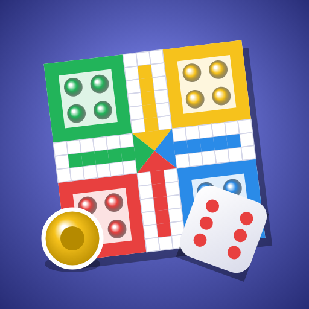
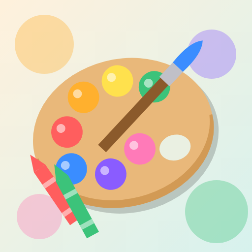

ألعاب جماعية
العب لوحدك أو أونلاين مع صحابك، وكل اللي فاتحين اللعبة بيشوفوا بعض.

لودو
تلوينالعب لوحدك أو أونلاين مع صحابك، وكل اللي فاتحين اللعبة بيشوفوا بعض.

لودو
تلوينDesigned by: Elsawah
هل تريد الخروج؟